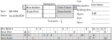
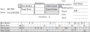

Beispiel für eine Schiedsrichter-Prüfung
Die folgenden Fragen geben einen Eindruck, was einen in der Badminton-Schiedsrichter-Prüfung erwartet. Komplexität und Umfang orientiert sich an der Prüfung zum nationalen Schiedsrichter; im Schiedsrichter-Grundlehrgang sind die Fragen einfacher. Einige dieser Fragen spiegeln auch eher den praktischen Teil und würden so nicht in der theoretischen Prüfung gestellt.
Offizielle Ansagen sind kursiv formatiert. Diese Ansagen müssen genau so in der theoretischen Prüfung notiert und in der praktischen Prüfung verwendet werden.
Dein erstes Turnier als Schiedsrichter! Wie solltest Du gekleidet sein?
- Schwarze Schuhe
- Schwarze Socken
- Lange schwarze Hose oder schwarzer Rock
- Schwarzes Oberteil (wenn möglich offizielles Schiedsrichter-Shirt)
Was bringst du als Schiedsrichter mit zu dem Turnier?
- Mindestens 2 Kugelschreiber
- Wahlmünze (z.B. diese, notfalls auch ein 1€-Stück)
- Stoppuhr, wenn möglich als Armbanduhr (kein Handy)
- Gelbe und rote Karte. Ohne Referee (z.B. bei Ligaspielen) auch eine schwarze Karte
- 2m-Zollstock
- Schiedsrichterausweis
- optional: Badminton-Regelwerk
- optional: Ordnungen des Verbands, der das Turnier veranstaltet
Der Ausrichter musste einige Felder nachkleben und bittet dich, nachzumessen. Wie groß ist ein Badminton-Feld?
610cm breit
1340cm lang
1340cm lang
Wie groß ist das Aufschlagfeld im Einzel?
Breite: 4cm Seitenlinie + 253cm Box + 4cm mittlere Linie = 261cm
Länge: 4cm vordere Aufschlaglinie + 388cm Box + 4cm Doppelaufschlaglinie + 72cm hinteres Feld + 4cm Grundlinie = 472cm
Länge: 4cm vordere Aufschlaglinie + 388cm Box + 4cm Doppelaufschlaglinie + 72cm hinteres Feld + 4cm Grundlinie = 472cm
Wie groß ist das Aufschlagfeld im Doppel?
Breite: 4cm Seitenlinie + 42cm Seitenstreifen + 4cm Einzellinie + 253cm Box + 4cm mittlere Linie = 307cm
Länge: 4cm vordere Aufschlaglinie + 388cm Box + 4cm Doppelaufschlaglinie = 396cm
Länge: 4cm vordere Aufschlaglinie + 388cm Box + 4cm Doppelaufschlaglinie = 396cm
Der Referee bittet dich, das Netz zu überprüfen. Was überprüfst Du?
- Keine (größeren) Löcher
- Netz sollte direkt am Pfosten anliegen.
- Der Pfosten sollte in der Mitte des Feldes und auf den Doppel-Seitenlinien stehen.
- Höhe des Netzes am Netzpfosten: 155cm
- Höhe des Netzes in der Mitte: 152,4cm
Die Halle ist 10m hoch. Das Deckengerüst hängt allerdings bis zu einer Höhe von 8m. Darunter hängt auch noch ein Basketballkorb. In 7m Höhe ist außerdem ein Seil, in 9m ein Belüftungsschacht. Welche Regeln gelten beim Aufschlag, insofern der Referee nichts anderes festlegt?
Die Halle ist eingeschränkt bespielbar. Beim Aufschlag gilt:
- Ball berührt Decke: Wiederholung
- Berührung des Deckengerüsts: Wiederholung
- Berührung des Seils: Wiederholung
- Berührung des Basketballkorbs: Wiederholung
- Berührung des Lüftungsschachts: Wiederholung
- Überfliegen des Deckengerüsts: Wiederholung
- Überfliegen des Basketballkorbs: Wiederholung
- Überfliegen des Seils: Prinzipiell Wiederholung, könnte aber auch als Weiterspielen festgelegt werden
- Überfliegen des Lüftungsschafts: Wiederholung
Welche Regeln gelten in dieser Halle im Spiel, sofern der Referee nichts anderes festlegt?
Die Halle ist eingeschränkt bespielbar. Im Spiel gilt:
- Ball berührt Decke: Fehler
- Berührung des Deckengerüsts: Fehler
- Berührung des Seils: Wiederholung
- Berührung des Basketballkorbs: Wiederholung
- Berührung des Lüftungsschachts: Fehler (weil über lichter Höhe)
- Überfliegen des Deckengerüsts: Wiederholung
- Überfliegen des Basketballkorbs: Wiederholung
- Überfliegen des Seils: Prinzipiell Wiederholung, könnte aber auch als Weiterspielen festgelegt werden
- Überfliegen des Lüftungsschafts: Wiederholung
Dein erstes Spiel! Ein Spieler hat seltsame Bälle aus Malaysia mitgebracht. Darf er mit ihnen spielen? Welche Eigenschaften muss ein Federball erfüllen?
Bei den meisten Turnieren müssen die Bälle durch den Ausrichter zugelassen werden. Der DBV und die Landesverbände führen meist Listen von zugelassenen Bällen. Bei einigen Turnieren ist die Ballsorte auch vorgeschrieben. Der Referee wird das im initialen Briefing durchgehen.
Ein Federball muss 16 Federn mit einer Länge zwischen 62mm und 70mm haben und zwischen 4,74g und 5,50g wiegen.
Ein Federball muss 16 Federn mit einer Länge zwischen 62mm und 70mm haben und zwischen 4,74g und 5,50g wiegen.
Du triffst die Spieler auf dem Spielfeld. Was überprüfst Du?
- Kleidung und Schläger badmintongerecht? (insbesondere keine gefährlichen Vorrichtungen)
- Bälle in ausreichender Zahl mitgebracht? (Wenn sie von den Spielern gestellt werden)
- Ersatzschläger mitgebracht?
- Genügen die Aufschriften auf der Kleidung den Bedingungen des Turniers? Falls der Referee nichts anderes festlegt, dann sind auf nationalen Turnieren alle nicht obszönen Werbungen erlaubt. Der Name muss allerdings üblicherweise korrekt sein, also nicht "Lin Dan" oder so. Näheres (wie z.B. paareinheitliche Kleidung) legt der Referee fest.
Arne Aalders spielt mit Beate Blom gegen Chris Corsen und Dana Dumler. Für alle ist es das erste Spiel mit Schiedsrichter. Arne und Beate gewinnen die Wahl. Welche Möglichkeiten haben sie?
- Aufschlag
- Rückschlag
- linke Spielfeldseite
- rechte Spielfeldseite
Beate möchte aufschlagen. Was fragst du Chris und Dana?
Wählen Sie Ihre Seite. Wer wird zuerst zurückschlagen?
(Kann in der Praxis auch anders formuliert werden)
(Kann in der Praxis auch anders formuliert werden)
Der Referee hat nach der Wahl einen Balltest angeordnet. Was ist zu tun?
Ein Spieler schlägt mit einem vollen Unterhandschlag auf Höhe der Grundlinie den Ball flach gerade übers Feld. Der Ball soll zwischen 53cm und 99cm vor der Grundlinie landen. Einige Felder haben dafür Markierungen; das ist etwa eine Schlägerkopfbreite vor und nach der Doppelaufschlaglinie.
Die vom Referee angesetzte Spielfeldeingewöhnungzeit von 90s nach Balltest ist vorüber. Was sagst Du an? Was passiert bis zu deiner nächsten Ansage?
Ansage: Spielbereit machen.
Die Spieler sollten sich jetzt ihrer Warmup-Kleidung entledigen (z.B. Jacke ausziehen).
Du solltest ggf. noch mal überprüfen, ob die Trikots in Ordnung sind (siehe Frage 10).
Jeder Spieler darf noch einen Probeaufschlag machen (im Einzel zwei).
Die Spieler sollten sich jetzt ihrer Warmup-Kleidung entledigen (z.B. Jacke ausziehen).
Du solltest ggf. noch mal überprüfen, ob die Trikots in Ordnung sind (siehe Frage 10).
Jeder Spieler darf noch einen Probeaufschlag machen (im Einzel zwei).
Beate schlägt von deiner linken Seite auf Chris auf. Was sagst Du an?
Meine Damen und Herren. Zu meiner Rechten [mit der rechten Hand auf den rechten T-Punkt zeigen], Chris Corsen und Dana Dumler, und zu meiner Linken [mit der linken Hand auf den linken T-Punkt zeigen], Arne Aalders und Beate Blom. Beate Blom schlägt auf zu Chris Corsen. Null beide. Bitte spielen.
Was steht jetzt auf dem Schiedsrichterzettel?
Beate schlägt zu hoch auf. Was genau bedeutet das?
Der gesamte Ball muss beim Aufschlag im Moment der Ballberührung unterhalb der untersten Rippe des Aufschlägers sein. (Regel §9.1.6)
Was sagst und zeigst Du an? Was steht auf Deinem Zettel?
Fehler [Zeige Zeichen für zu hohen Aufschlag: Arm horizontal] Aufschlagwechsel. Eins Null.
Im nächsten Ballwechsel smasht Arne den Ball auf den Boden, genau in die Mitte des Feldes. Was sagst Du an? Was steht auf Deinem Zettel?
Aufschlagwechsel. Eins beide.
Der nächste Aufschlag landet auf der vorderen Linie. Chris hatte sich allerdings gerade zum Nachbarfeld umgedreht, als der Aufschlag kam. Was sagst Du an? Was steht auf Deinem Zettel?
Nur der Auf- und Rückschläger müssen bereit sein. Ihre Partner sind in den Regeln nicht erwähnt. Die Linie gehört zum Feld. Also:
Zwei Eins
Zwei Eins
Im nächsten Ballwechsel täuscht Dana einen kurzen Schlag an, schlägt aber dann doch weit. Der Ball landet im Feld. Was sagst Du an? Was steht auf deinem Zettel?
Im Spiel dürfen Spieler antäuschen, wie sie wollen.
Aufschlagwechsel. Zwei beide.
Aufschlagwechsel. Zwei beide.
Beim nächsten Aufschlag stehen Arne und Dana beide mit einem Fuß auf der Aufschlaglinie. Der Aufschlag geht ins Aus. Was sagst Du an? Was steht auf deinem Zettel?
Die Partner der Auf- und Rückschläger (in diesem Fall Dana) dürfen stehen, wo sie wollen. Die Auf- und Rückschläger dürfen aber nicht die Linie berühren(Regel §9.1.3).
Fehler Rückschläger. Drei zwei.
Fehler Rückschläger. Drei zwei.
Der nächste Aufschlag ist ein Netzroller, der prompt mit zu wenig Kontrolle hinter die Grundlinie geschlagen wird, bevor Du etwas gesagt hast. Was sagst Du an? Was steht auf deinem Zettel?
Netzroller sind im Badminton ohne Bedeutung, das Spiel geht weiter.
Aus. Vier zwei.
Aus. Vier zwei.
Im nächsten Ballwechsel schlägt Chris einen Ball vom Aus am Netz vorbei ins Feld. Was sagst Du an? Was steht auf Deinem Zettel?
Nach Regel §13.3.2 muss der Ball über das Netz fliegen.
Fehler. Aufschlagwechsel. Drei Vier.

Fehler. Aufschlagwechsel. Drei Vier.
Im nächsten Ballwechsel fliegt ein Ball vom Nachbarfeld auf die Doppelaufschlaglinie.
Sekundenbruchteile danach schwingt Dana nach dem Töten des Spielballs über dem Netz aus. Der Spielball landet erst nach dem Übergreifen auf dem Boden zwischen Arne und Beate, also im Feld.
Was sagst du an? Was steht auf deinem Zettel?
Sekundenbruchteile danach schwingt Dana nach dem Töten des Spielballs über dem Netz aus. Der Spielball landet erst nach dem Übergreifen auf dem Boden zwischen Arne und Beate, also im Feld.
Was sagst du an? Was steht auf deinem Zettel?
Ein Ball vom Nachbarfeld führt nicht zwingend zur Wiederholung (siehe §3.5.2 Anweisungen für Technische Offizielle). In diesem Fall hat der Ball niemanden irritiert. Regel §13.4.2 erlaubt das Eindringen des Schlägers nach dem Schlag.
Aufschlagwechsel. 5 beide.
Aufschlagwechsel. 5 beide.
Im nächsten Ballwechsel landet ein Smash von Beate nahe der Grundlinie. Du kannst nicht genau erkennen wo der Ball gelandet ist, und ein Zuschauer sagt das der Ball aus war. Chris und Dana meinen das er aus war, die anderen Spieler sind sich nicht sicher. Was sagst Du an? Was steht auf deinem Zettel?
Zuschauer oder Spieler beeinflussen das Ergebnis der Schiedsrichterentscheidung nicht, mit der Ausnahme wenn Spieler gegen sich entscheiden. Siehe auch §4.5 Anweisungen für Technische Offizielle.
Wiederholung. 5 beide.
Der Schiedsrichterzettel bleibt unverändert.
Wiederholung. 5 beide.
Der Schiedsrichterzettel bleibt unverändert.
Der nächste Aufschlag geht direkt ins Netz. Was sagst Du an? Was steht auf deinem Zettel?
"Fehler" muss nach §3.3.4.3 Anweisungen für Technische Offizielle in dieser Situation nicht unbedingt gesagt werden.
Aufschlagwechsel. Sechs Fünf.
Aufschlagwechsel. Sechs Fünf.
Wer schlägt jetzt auf? Wer schlägt zurück?
Arne schlägt zu Chris auf.
Das kann man im Schiedsrichterzettel ablesen, indem man schaut, wie der Punktestand und Aufschläger der beiden Teams bei ihrem letzten Aufschlag war.
Das kann man im Schiedsrichterzettel ablesen, indem man schaut, wie der Punktestand und Aufschläger der beiden Teams bei ihrem letzten Aufschlag war.
Am Ende eines langen Ballwechsels spielt Arne einen kurzen Drop. Der Ball trifft die Netzkante und verfängt sich auf der Netzkante. Der Ball bleibt hängen, und Chris fragt ob er weiterspielen soll. Wie entscheidest du? Was sagst du an? Was steht auf deinem Zettel?
Wiederholung per §14.2.3.1.
Der Zettel bleibt unverändert.
Der Zettel bleibt unverändert.
Im nächsten Ballwechsel landet Beates Clear genau auf der Grundlinie. Was sagst du an? Was steht auf deinem Zettel?
Es gibt keine Ansage für Innerhalb. Das Zeichen, das der Linienrichter gibt (rechte Hand nach vorne) kann verwendet werden.
Sieben Fünf
Sieben Fünf
Im nächsten Ballwechsel trifft Dana den Ball beim Smash nicht genau. Zwei Federn fliegen weg, und der Ball fliegt plötzlich viel schneller und landet hinter der Grundlinie von Arne und Beate. Wie entscheidest du? Was sagst du an? Was steht auf deinem Zettel?
Nach §14.2.4 wird Wiederholung nur gegeben, wenn die Basis des Balles sich von den Federn löst.
Aus. Aufschlagwechsel. Sechs Sieben.
Im Schiedsrichterzettel wird der Ball eingetragen:
Aus. Aufschlagwechsel. Sechs Sieben.
Im Schiedsrichterzettel wird der Ball eingetragen:
Chris täuscht einen langen Aufschlag an, aber bevor er denn Ball berührt, hält er noch mal inne und schlägt dann doch kurz auf. Beate returniert ins Netz. Wie entscheidest du? Was sagst du an? Was steht auf deinem Zettel?
Das ist ein Aufschlagfehler gemäß §9.18.
Fehler. Dabei Handzeichen zeigen: Rechte Hand von rechts nach links schieben, dabei unterbrechen. Aufschlagwechsel. Acht Sechs.
Fehler. Dabei Handzeichen zeigen: Rechte Hand von rechts nach links schieben, dabei unterbrechen. Aufschlagwechsel. Acht Sechs.
Chris lässt sich jetzt sehr viel Zeit, bis er zum Rückschlag bereit ist. Der lange Aufschlag fällt auf die Grundlinie. Wie entscheidest du? Was sagst du an? Was steht auf deinem Zettel?
Bitte spielen. (oder Sieben Acht, zu Chris)
Aus. Aufschlagwechsel. Sieben Acht.
Aus. Aufschlagwechsel. Sieben Acht.
Chris lässt sich wieder viel Zeit und spricht noch mit seinem Coach. Sein Clear geht dann auch prompt ins Seitenaus. Arne möchte den Ball trotzdem noch schlagen, lässt ihn aber fallen, nachdem sein Coach "Aus" sagt.
Wie entscheidest du? Was sagst du an? Was steht auf deinem Zettel?
Wie entscheidest du? Was sagst du an? Was steht auf deinem Zettel?
Zu Chris: Bitte spielen.. Ggf. kann der Spieler auch herangeholt werden.
Wenn ein Coach redet, während der Ball im Spiel ist, wird Wiederholung gegeben (vergleiche Anweisungen für Technische Offizielle 3.5.6.3).
Wiederholung. Sieben Acht. Dann mit dem Spieler sprechen, das der Coach nicht ins Spiel reinrufen darf. (Offizielle Ansage: Coachen ist während des Ballwechsels nicht erlaubt.).
Ggf. kann hier auch der Referee gerufen werden.
Der Schiedsrichterzettel bleibt unverändert.
Wenn ein Coach redet, während der Ball im Spiel ist, wird Wiederholung gegeben (vergleiche Anweisungen für Technische Offizielle 3.5.6.3).
Wiederholung. Sieben Acht. Dann mit dem Spieler sprechen, das der Coach nicht ins Spiel reinrufen darf. (Offizielle Ansage: Coachen ist während des Ballwechsels nicht erlaubt.).
Ggf. kann hier auch der Referee gerufen werden.
Der Schiedsrichterzettel bleibt unverändert.
Chris lässt sich schon wieder viel Zeit, und alle anderen Spieler warten auf ihn. Wie entscheidest du? Was sagst du an? Was steht auf deinem Zettel?
Chris Corsen, kommen Sie zu mir. Chris Corsen, Verwarnung wegen unsportlichen Verhaltens. Dabei die gelbe Karte zeigen. Sieben Acht.
Auf dem Schiedsrichterzettel wird ein W eingetragen:
Nach Ende des Spiels sollte noch kurz eine Bemerkung (z.B. "Gelbe Karte gegen Chris Corsen bei 7:8 im ersten Satz wegen Spielverzögerung") unten oder auf der Rückseite des Schiedsrichterzettels hinzugefügt werden.
Auf dem Schiedsrichterzettel wird ein W eingetragen:
Nach Ende des Spiels sollte noch kurz eine Bemerkung (z.B. "Gelbe Karte gegen Chris Corsen bei 7:8 im ersten Satz wegen Spielverzögerung") unten oder auf der Rückseite des Schiedsrichterzettels hinzugefügt werden.
In einem spannenden Ballwechsel mit vielen Dives tritt Beate beim Töten unter das Netz. Der Ball trifft Dana. Wie entscheidest du? Was sagst du an? Was steht auf deinem Zettel?
Nach §13.4.3 ist das kein Fehler, solange der Gegner nicht behindert oder abgelenkt wird. Wenn der Ball von einem Spieler berührt wird, ist das aber ein Fehler nach §13.3.4.
Fehler. Aufschlagwechsel. Neun Sieben.
Das Feld darf mit Erlaubnis des Schiedsrichters gewischt werden. Wenn vorhanden von Mopper-Kids oder Linienrichtern, ansonsten von den Spielern selber.
Fehler. Aufschlagwechsel. Neun Sieben.
Das Feld darf mit Erlaubnis des Schiedsrichters gewischt werden. Wenn vorhanden von Mopper-Kids oder Linienrichtern, ansonsten von den Spielern selber.
Dana hat sich bei einem Dive das Knie etwas aufgeschürft. Es blutet etwas, aber sie möchte weiterspielen. Wie entscheidest du? Was sagst du an? Was steht auf deinem Zettel?
Eine blutende Wunde muss nach §3.5.8.1 ATO gestillt werden. In solchen außerordentlichen Fällen muss der Referee gerufen werden. Dazu die rechte Hand heben.
Gleichzeitig eine Stoppuhr starten, um die Länge der Spielunterbrechung zu dokumentieren.
Der Referee wird einen Arzt oder Physio holen, welcher ein Pflaster verwenden kann.
Im Schiedsrichterzettel dann

Nach Ende des Spiels können dann weitere Anmerkungen eingetragen werden.
Im Schiedsrichterzettel dann
V für Verletzung und R für Referee eintragen, z.B.:Nach Ende des Spiels können dann weitere Anmerkungen eingetragen werden.
Im nächsten Ballwechsel spielt Dana einen flachen Drive, der im Seitenaus landet. Dana sagt aber, dass der Ball Beate gestriffen hätte. Beate hat nichts gemerkt. Du bist dir nicht sicher. Wie entscheidest du? Was sagst du an? Was steht auf deinem Zettel?
Nach §4.4 Anweisungen für Technische Offizielle sagt der Schiedsrichter im Zweifelsfall keinen Fehler an.
Aus. Zehn Sieben.
Aus. Zehn Sieben.
Während des nächsten Ballwechsels fällt das Licht aus und Du sitzt plötzlich im Dunklen. Chris trifft im Dunklen den Ball ungenau, und er fliegt ins Nachbarfeld. Nach 3 Minuten Dunkelheit wird das Licht wieder einngeschaltet. Wie entscheidest du? Was sagst du an? Was steht auf deinem Zettel?
Bei Lichtausfall wird der Ballwechsel abgebrochen: Wiederholung.
Solange es dunkel ist bleibt das Spiel unterbrochen. Starte deine Stoppuhr und sage an: Das Spiel ist unterbrochen.. Sobald das Licht wieder an ist, notiere die Dauer der Unterbrechung und frage die Spieler Sind sie spielbereit?.
Das Spiel geht weiter mit Zehn Sieben, bitte spielen..

Nach Ende des Spiels kannst Du unten auf dem Schiedsrichterzettel (oder auf der Rückseite) eine kleine Notiz wie "3 Minuten Lichtausfall beim Stand von 10:7 im 1.Satz" hinzufügen.
Solange es dunkel ist bleibt das Spiel unterbrochen. Starte deine Stoppuhr und sage an: Das Spiel ist unterbrochen.. Sobald das Licht wieder an ist, notiere die Dauer der Unterbrechung und frage die Spieler Sind sie spielbereit?.
Das Spiel geht weiter mit Zehn Sieben, bitte spielen..
Nach Ende des Spiels kannst Du unten auf dem Schiedsrichterzettel (oder auf der Rückseite) eine kleine Notiz wie "3 Minuten Lichtausfall beim Stand von 10:7 im 1.Satz" hinzufügen.
Die Spieler können sich nicht mehr erinnern, wie sie vor der Unterbrechung standen. Wer schlägt auf? Wer schlägt zurück?
Der letzten Punktestand auf dem Schiedsrichterzettel ist 10(Arne).
Der letzte Punktestand der Gegner ist 7(Dana).
Daher schlägt Arne von rechts auf Chris auf.
Der letzte Punktestand der Gegner ist 7(Dana).
Daher schlägt Arne von rechts auf Chris auf.
Bevor der Ballwechsel beginnen kann, beleidigt Dana die Gegner. Wie entscheidest du? Was sagst du an? Was steht auf deinem Zettel?
Ein einfache Beleidigung ist normalerweise eine gelbe Karte (je nach Schweregrad). In diesem Fall ist an die Seite (nämlich an Chris) aber schon eine gelbe Karte in diesem Spiel gezeigt worden. Nach §16.7.1.2 ist demnach eine rote Karte zu zeigen.
Dana Dumler, kommen Sie zu mir. Dana Dumler, Fehler wegen unsportlichen Verhaltens. Direkt danach durch Heben der rechten Hand den Referee rufen (vergleiche §16.7.2).
Nach Gespräch mit dem Referee: Elf Sieben. Pause und Stoppuhr starten.
Dana Dumler, kommen Sie zu mir. Dana Dumler, Fehler wegen unsportlichen Verhaltens. Direkt danach durch Heben der rechten Hand den Referee rufen (vergleiche §16.7.2).
Nach Gespräch mit dem Referee: Elf Sieben. Pause und Stoppuhr starten.
Auf was solltest Du jetzt achten? Was sagst du an? Was steht auf deinem Zettel?
Während der Pause sollte der Schiedsrichter kontrollieren:
Nach 40 Sekunden sagst Du an: Feld 1, 20 Sekunden. Feld 1, 20 Sekunden.
Dann ggf. die Coaches ansprechen, falls sie das Spielfeld nicht verlassen. Dann: Elf Sieben. Bitte spielen.
- Sind noch genügend Bälle vorhanden, mindstens bis zur nächsten Pause?
- Die Spieler dürfen nicht auf dem Feld trinken, ggf. darauf hinweisen.
- Die Boxen mit dem Equipment der Spieler sollen beim Schiedsrichterstuhl bleiben, und das Equipment der Spieler sollte (insofern möglich) da drin sein.
- Ein guter Schiedsrichter wirft noch mal einen Blick auf den Zettel, um direkt zu wissen, wer auf- und wer zurückschlägt.
Nach 40 Sekunden sagst Du an: Feld 1, 20 Sekunden. Feld 1, 20 Sekunden.
Dann ggf. die Coaches ansprechen, falls sie das Spielfeld nicht verlassen. Dann: Elf Sieben. Bitte spielen.
Arne kommt 90 Sekunden nach Beginn der Pause auf's Feld. Wie entscheidest du? Was sagst du an? Was steht auf deinem Zettel?
Das ist nach Regel §16.2 / §16.7.1.3 automatisch eine rote Karte.
Arne Aalders, kommen Sie zu mir. (rote Karte zeigen) Arne Aalders, Fehler wegen unsportlichen Verhaltens. Direkt danach/dabei durch Heben der rechten Hand den Referee rufen (vergleiche §16.7.2).
Aufschlagwechsel. Acht Elf. Bitte spielen.

Nach Ende des Spiels noch eine Notiz hinzufügen, z.B. "Arne Aalders war bei der Pause im ersten Satz erst 90 Sekunden nach Beginn der Pause wieder auf dem Spielfeld".
Arne Aalders, kommen Sie zu mir. (rote Karte zeigen) Arne Aalders, Fehler wegen unsportlichen Verhaltens. Direkt danach/dabei durch Heben der rechten Hand den Referee rufen (vergleiche §16.7.2).
Aufschlagwechsel. Acht Elf. Bitte spielen.

Nach Ende des Spiels noch eine Notiz hinzufügen, z.B. "Arne Aalders war bei der Pause im ersten Satz erst 90 Sekunden nach Beginn der Pause wieder auf dem Spielfeld".
Das Spiel beruhigt sich etwas. In einem späteren Ballwechsel tritt Arne ungünstig auf und verfehlt den Ball, der im Feld landet. Er hält sich am Knöchel. Vor dem Ballwechsel sah dein Zettel wie folgt aus:
Wie entscheidest du? Was sagst du an? Was steht auf deinem Zettel?
Wie entscheidest du? Was sagst du an? Was steht auf deinem Zettel?
Aufschlagwechsel. Neunzehn beide.
Referee rufen und Stoppuhr starten. Der Referee wird mit dem Physio auf's Feld kommen.
Ggf. den Spieler fragen: Können Sie weiterspielen? oder Geben Sie auf?
Auf dem Zettel können schon
Referee rufen und Stoppuhr starten. Der Referee wird mit dem Physio auf's Feld kommen.
Ggf. den Spieler fragen: Können Sie weiterspielen? oder Geben Sie auf?
Auf dem Zettel können schon
V und R eingetragen werden:Glücklicherweise war's halb so schlimm. Mit etwas Tape kann Arne nach 2 Minuten Unterbrechung weiterspielen. Wie entscheidest du? Was sagst du an? Was steht auf deinem Zettel?
Dauer der Verletzung eintragen:

Die Ansage enthält dann "Bitte spielen": Neunzehn beide. Bitte spielen.
Die Ansage enthält dann "Bitte spielen": Neunzehn beide. Bitte spielen.
Im nächsten Ballwechsel täuscht Beate einen Drop an, lässt den Ball aber durch. Arne spielt einen weiten Clear, der auf der Grundlinie landet. Chris und Dana waren von Beate irritiert. Wie entscheidest du? Was sagst du an? Was steht auf deinem Zettel?
Nach dem Aufschlag dürfen Spieler beliebig Schläge antäuschen. Nur das beabsichtigte Ablenken des Gegners ist nach §13.4.5 ein Fehler. In der Praxis ist das extrem selten.
Aufschlagwechsel. Zwanzig Satzpunkt Neunzehn.
Aufschlagwechsel. Zwanzig Satzpunkt Neunzehn.
Im nächsten Ballwechsel will Arne töten, aber trifft den Ball nicht und schwingt über dem Netz aus, ohne es zu berühren. Beate spielt einen Drop. Dana kommt noch gerade an den Drop ran, spiel ihn aber ins Seitenaus und berührt dabei das Netz.
Wie entscheidest du? Was sagst du an? Was steht auf deinem Zettel?
Wie entscheidest du? Was sagst du an? Was steht auf deinem Zettel?
Sobald Arne über das Netz schwingt, ohne den Ball getroffen zu haben, ist das ein Fehler (§13.4.2). Ein Fehler beendet sofort den Ballwechsel(§15.3).
Fehler. Aufschlagwechsel. Zwanzig beide.
Bei 20:20 ist ein Strich hinzuzufügen:
Fehler. Aufschlagwechsel. Zwanzig beide.
Bei 20:20 ist ein Strich hinzuzufügen:
Im nächsten Ballwechsel fliegt Dana ihr Schläger aus der (rechten) Hand. Sie nimmt den Schläger wieder auf und spielt einen Ball mit links, der als Netzroller im Feld landet!
Wie entscheidest du? Was sagst du an? Was steht auf deinem Zettel?
Wie entscheidest du? Was sagst du an? Was steht auf deinem Zettel?
Es gibt keine Regel, die besagt wie oder mit welcher Hand zu schlagen ist.
Einundzwanzig Zwanzig.
Einundzwanzig Zwanzig.
Ein paar Ballwechsel später sieht Dein Schiedsrichterzettel wie folgt aus:
Wer schlägt zu wem auf? Was sagst Du an?
Wer schlägt zu wem auf? Was sagst Du an?
Arne schlägt zu Chris auf.
Aufschlagwechsel. Achtundzwanzig Siebenundzwanzig.
Aufschlagwechsel. Achtundzwanzig Siebenundzwanzig.
Arne smasht ins Netz. Dana steht allerdings so nah am Netz, das der Ball auf der anderen Seite auf ihren Fuß fällt.
Wie entscheidest du? Was sagst du an? Was steht auf deinem Zettel?
Wie entscheidest du? Was sagst du an? Was steht auf deinem Zettel?
Nach §15.1 ist der Ball nicht mehr im Spiel, sobald er vom Netz aus auf der eigenen Seite anfängt zu fallen.
Fehler. Aufschlagwechsel. Achtundzwanzig beide.

Fehler. Aufschlagwechsel. Achtundzwanzig beide.
Chris trifft den Ball sehr unsauber mit Rahmen und Bespannung. Statt eines Smashes wird es nur ein kurzer Drop, der aber über das Netz ins Feld geht.
Wie entscheidest du? Was sagst du an? Was steht auf deinem Zettel?
Wie entscheidest du? Was sagst du an? Was steht auf deinem Zettel?
Kein Fehler nach §13.3.7. Beim Erreichen von 29 Punkten wird der Satzpunkt immer angesagt.
Neunzwanzig Satzpunkt Achtundzwanzig.

Neunzwanzig Satzpunkt Achtundzwanzig.
Dana fällt bei der Abwehr der Schläger aus der Hand. Den kurzen Drop von Beate kann sie aber noch mit der Hand ins Feld zurückschlagen.
Wie entscheidest du? Was sagst du an? Was steht auf deinem Zettel?
Wie entscheidest du? Was sagst du an? Was steht auf deinem Zettel?
Klarer Fehler nach §13.3.4.
Fehler. Aufschlagwechsel. Neunzwanzig Satzpunkt beide.
Fehler. Aufschlagwechsel. Neunzwanzig Satzpunkt beide.
Arne und Beate gewinnen in diesem Satz alle weiteren Ballwechsel. Welche Ansagen und Aktionen machst Du, bis der Ball wieder fliegt? Was steht auf deinem Zettel? Falls es mehrere Möglichkeiten gibt, dann suche Dir eine Möglichkeit aus und notiere das kurz.
Ein Satz endet bei 30. Daher ist die Ansage einfach:
Satz. Der erste Satz wurde gewonnen von Arne Aalders und Beate Blom mit Dreißig Neunundzwanzig. Das Ergebnis des Satzes schreibst du noch mal auf und umkreist es, etwa wie folgt:
Mit der Ansage "Satz" startest du deine Stoppuhr. Wenn die Spieler nach 100 Sekunden noch nicht bereit sind sagst du an: Feld 1, 20 Sekunden. Feld 1, 20 Sekunden.
Wenn die Spieler wieder auf dem Feld sind, notierst du dir, wer auf- und wer zurückschlägt. Falls das unklar ist kannst du die Spieler auch (aber nach dem Coaching) fragen. Wenn z.B. Arne auf Chris aufschlägt, dann sieht dein Zettel zu Beginn des 2. Satzes wie folgt aus:
Die Ansage des 2. Satzes ist dann einfach: Zweiter Satz. Null beide. Bitte spielen.
Satz. Der erste Satz wurde gewonnen von Arne Aalders und Beate Blom mit Dreißig Neunundzwanzig. Das Ergebnis des Satzes schreibst du noch mal auf und umkreist es, etwa wie folgt:
Mit der Ansage "Satz" startest du deine Stoppuhr. Wenn die Spieler nach 100 Sekunden noch nicht bereit sind sagst du an: Feld 1, 20 Sekunden. Feld 1, 20 Sekunden.
Wenn die Spieler wieder auf dem Feld sind, notierst du dir, wer auf- und wer zurückschlägt. Falls das unklar ist kannst du die Spieler auch (aber nach dem Coaching) fragen. Wenn z.B. Arne auf Chris aufschlägt, dann sieht dein Zettel zu Beginn des 2. Satzes wie folgt aus:
Die Ansage des 2. Satzes ist dann einfach: Zweiter Satz. Null beide. Bitte spielen.
Weil beide Seiten sich in der Pause über die Aufschläge beschwert haben, setzt der Referee einen Aufschlagrichter ein. Nenne fünf mögliche Aufschlagfehler und beschreibe die Handsignale dazu.
- Fuß auf der Linie oder sogar außerhalb des Aufschlagfelds: rechte Hand zeigt auf rechten Fuß.
- Ein Teil des Fußes nicht während des ganzen Aufschlags auf einer Stelle auf dem Boden: rechte Hand zeigt auf rechten Fuß.
- Ball höher als unterste Rippe: rechte Hand waagrecht.
- Schläger zeigt nicht nach unten: rechte Hand senkrecht.
- Unterbrechung/Abstoppen beim Aufschlag: rechte Hand von rechts nach links wischen, abstoppen.
- Federn getroffen: Linke Hand zeigt auf rechte Handfläche.
Arne und Beate gewinnen den ersten Satz 30-29. Der zweite Satz wird von Chris und Dana mit 23-21 gewonnen. Im dritten Satz schlägt Dana auf Beate auf. Was ist deine Ansage zu Beginn des dritten Satzes?
Einfach Entscheidungssatz. Null beide. Bitte spielen.
Nach einigen Ballwechseln sieht dein Zettel im 3. Satz wie folgt aus (die Punkte bis 5:5 sind hier nicht dargestellt):
Was ist deine Ansage? Wer schlägt auf wen auf?
Was ist deine Ansage? Wer schlägt auf wen auf?
Aufschlagwechsel. Acht Zehn.
Chris schlägt auf Arne auf.
Chris schlägt auf Arne auf.
Beim nächsten Aufschlag sagt der Aufschlagrichter laut Fehler und hält seine rechte Hand horizontal.
Wie entscheidest du? Was sagst du an? Was steht auf deinem Zettel? Beschreibe alle Ansagen, Aktionen, und Notizen auf dem Zettel, bis der Ball wieder fliegt.
Wie entscheidest du? Was sagst du an? Was steht auf deinem Zettel? Beschreibe alle Ansagen, Aktionen, und Notizen auf dem Zettel, bis der Ball wieder fliegt.
Aufschlagfehler gegeben. Aufschlagwechsel. Elf Acht. Pause. Feldseiten wechseln.
Du startest die Stoppuhr. Nach 40 Sekunden sagst du Feld 1, 20 Sekunden. Feld 1, 20 Sekunden., falls wenn die Spieler noch nicht bereit sind.
Jetzt solltest Du noch mal überprüfen, ob Auf- und Rückschläger korrekt sind – in diesem Fall sollte Beate auf Dana aufschlagen.
Sobald die Spieler bereit sind, sagst du Elf Acht. Bitte spielen.
Du startest die Stoppuhr. Nach 40 Sekunden sagst du Feld 1, 20 Sekunden. Feld 1, 20 Sekunden., falls wenn die Spieler noch nicht bereit sind.
Jetzt solltest Du noch mal überprüfen, ob Auf- und Rückschläger korrekt sind – in diesem Fall sollte Beate auf Dana aufschlagen.
Sobald die Spieler bereit sind, sagst du Elf Acht. Bitte spielen.
Nach einigen Ballwechseln steht es 20-15 für Chris und Dana. Beate schlägt auf, aber der Aufschlag ist zu kurz. Beschreibe alle Ansagen und Aktionen, die jetzt passieren.
- Ansage: Aus. Satz.
- Alle Spieler schütteln sich die Hände (High Five ist auch ok) und geben dir und dem Aufschlagrichter die Hand.
- Ansage: Das Spiel wurde gewonnen von Chris Corsen und Dana Dumler mit Neunundzwanzig-Dreißig Dreiundzwanzig-Einundzwanzig Einundzwanzig-Fünfzehn.
- Endzeit notieren oder merken.
- Ggf. bei Linienrichtern bedanken (kurzes Nicken).
- Vom Stuhl klettern und mit dem Aufschlagrichter zurück zum Referee.
- Beim Aufschlagrichter bedanken.
- Schiedsrichterzettel ausfüllen.
- Schiedsrichterzettel beim Referee abgeben.
Was sollte nach Spielende alles auf dem Schiedsrichterzettel vermerkt werden?
- Endzeit ggf. eintragen
- Letzten Punkt ggf. eingetragen
- Überprüfen: Kreis und Punktestand nach jedem Satz?
- Punktestand im Kopf des Zettels (oben mittig) eintragen (kann für vorherige Sätze auch schon vorher passieren)
- Sieger im Kopf des Zettels umkreisen
- Anzahl der Bälle aus Strichliste ablesen, eintragen und umkreisen
- Ggf. besondere Vorkommnisse (Karten, Verletzungen, Unterbrechungen, Einwechseln von Aufschlag- und Linienrichtern usw.) eintragen
- Zettel unterschreiben
Eine Woche später hast Du einen Einsatz bei einem Mannschaftsturnier. Arne spielt für den ASV Aalen, Chris für den CfB Cronenberg. Die Halle ist 11,5m hoch, mit Verstrebungen in Höhe von 10m über dem Boden. Welche Regeln gelten beim Aufschlag bzw. im Spiel, insofern der Referee nichts anderes festlegt?
Die Halle ist uneingeschränkt bespielbar. Sowohl beim Aufschlag als auch im Spiel ist jeder Treffer der Decke oder Verstrebungen Fehler.
Bei dem Mannschaftsturnier hast Du jetzt auch vier Linienrichter. Allerdings ist es für alle der erste Einsatz. Welche Tipps gibst Du den Linienrichtern?
- Wenn der Ball entlang deiner Linie im Feld ist, zeige mit der rechten Hand auf die Linie vor dir.
- Wenn der Ball entlang deiner Linie im Feld aus ist, sage laut Aus und strecke beide Hände auf beide Seiten.
- Du entscheidest nur entlang deiner Linie. Auch wenn der Ball insgesamt aus ist, zeigst Du nur den Ball entlang deiner Linie an.
- Wenn Du den Ball nicht gesehen hast, verdecke mit beiden Händen deine Augen.
- Warte mit der Ansage bis der Ball den Boden berührt – auch wenn der Ball sehr weit aus ist.
- Lass dich nicht von den Spielern beeinflussen.
Du bist Schiedsrichter beim 2. Herreneinzel; Arne spielt gegen Chris. Arne gewinnt die Wahl und möchte zurückschlagen. Chris möchte auf deiner linken Seite stehen. Was sagst Du an? Was sagst du an? Was steht auf deinem Zettel?
Meine Damen und Herren. Zu meiner Rechten [mit der rechten Hand auf den rechten T-Punkt zeigen], ASV Aalen, vertreten durch Arne Aalders, und zu meiner Linken [mit der linken Hand auf den linken T-Punkt zeigen], CfB Cronenberg, vertreten durch Chris Corsen. CfB Cronenberg schlägt auf. Null beide. Bitte spielen.
Im Einzel wird nur der Aufschläger mit
Im Einzel wird nur der Aufschläger mit
A markiert: